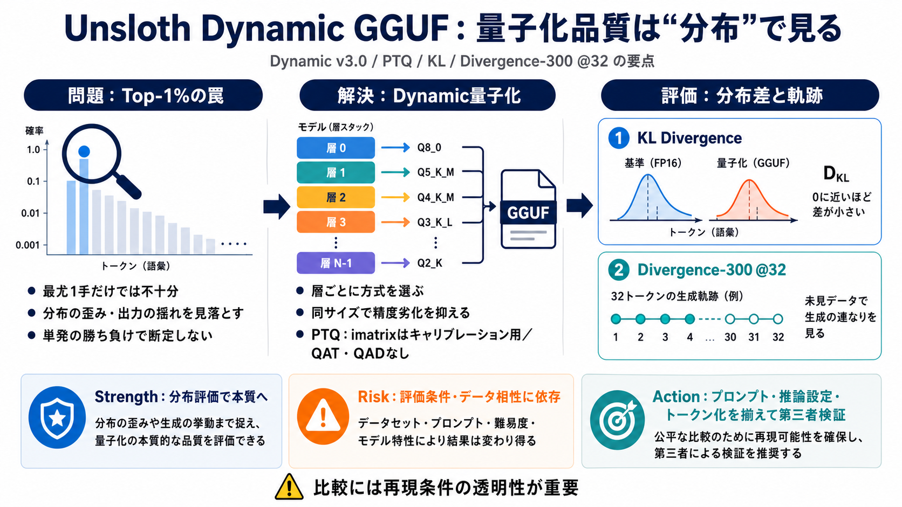

Unsloth Dynamic v2.0 GGUFs
If we plot the ratio of the disk space increase and the KL Divergence ratio change, we can see a much clearer benefit! O…

If we plot the ratio of the disk space increase and the KL Divergence ratio change, we can see a much clearer benefit! O…
7.31 4.32 IQ2\_M 66.47 64.47 8.96 4.40 Q2\_K 68.50 67.60 9.78 4.35 Q2\_K\_XL 68.70 67.77 9.95 4.30 IQ3\…
Dynamic v2.0 is Unsloth’s second‑generation quantization engine built on the GGUF (GGML Unified Format) container. Unlik…
6:43 PM · Apr 24, 202559.8KViews user avatar Daniel Han @danielhanchen Apr 24, 2025 If anyone wants to read…
| | | | | --- | | | tenpa0000 5 months ago | prev | next (javascript:void(0)) I run Llama 3.2 3B locally for l…